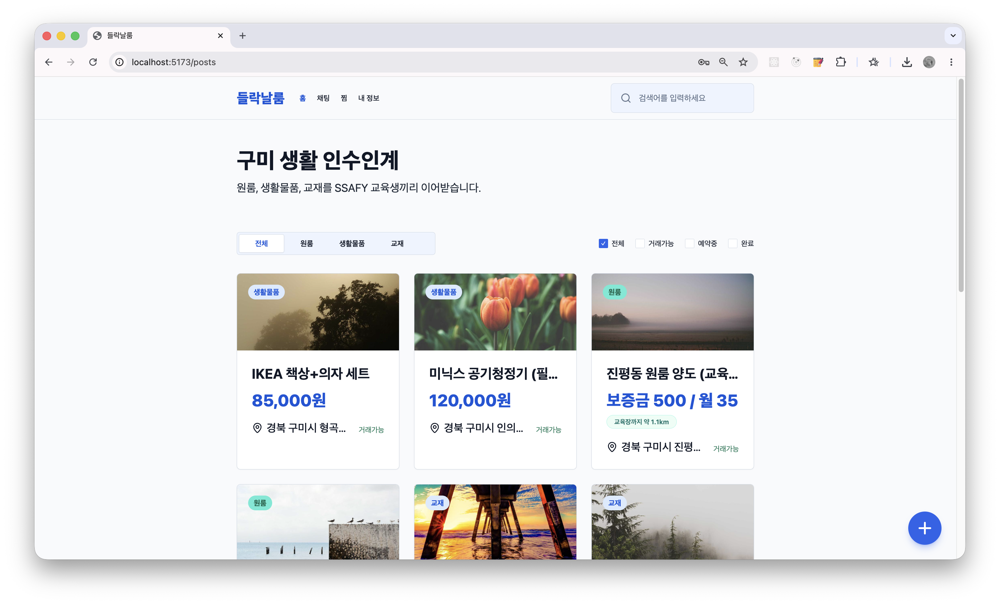

React와 Spring Boot로 한 기능을 화면부터 서버까지 만들고, 배포한 뒤 장애 원인을 찾는 일까지 맡아 왔습니다.
기능을 만들기 전에 틀리면 안 되는 것이 무엇인지부터 정합니다. 권한 밖의 데이터가 나가지 않는 것,
AI가 금액을 지어내지 않는 것, 쿠폰이 두 장 나가지 않는 것 같은 일입니다.
삼성청년SW·AI아카데미(SSAFY) 15기 상반기에 Spring·DB·Android를 배웠고, 이후 팀 프로젝트 두 개(길봄·도담)를 진행했습니다.
공통 프로젝트 길봄으로 반 1등 우수상을 받았습니다.
AI 코치 API 3종을 만들었습니다. LLM에는 서버가 이미 계산한 진단 결과만 넘기고, 이름·계좌·거래 내역은 애초에 읽지 않게 했습니다.
답변에 든 숫자를 서버 계산값과 하나씩 맞춰 보고, 맞지 않는 숫자가 하나라도 있으면 답변을 버리고 준비해 둔 문장으로 답했습니다. 말투가 조금 딱딱해져도 금액이 틀리는 것은 막아야 했습니다.
같은 질문은 Redis에 저장해 둔 답변으로 돌려줘 응답 시간을 2.29초에서 0.11초로 줄였고, 사용자당 시간당 40회로 호출을 제한해 AI 사용료가 갑자기 늘지 않게 했습니다.
개선 행동 추적 API 11개와 월간·일간 리포트 API 8개도 맡았습니다.
잘못된 변경이 올라와도 멈추지 않는 배포
AWS EC2 서버 구성과 Jenkins 배포 자동화를 혼자 맡았습니다. 코드가 합쳐지면 빌드·테스트·배포가 자동으로 진행됩니다.
제가 만든 테이블의 타입이 코드와 어긋나 서비스가 60분 멈춘 뒤, 새 버전을 임시로 먼저 띄워 정상 기동을 확인해야만 실제 서버를 교체하게 바꿨습니다. 닷새 뒤 팀원의 DB 변경이 코드와 맞지 않았을 때 이 단계가 배포를 막아 서비스는 멈추지 않았습니다.
HTTPS, 로그인 요청 횟수 제한, DB 자동 백업과 복구 리허설, Prometheus·Grafana 모니터링을 갖췄습니다.
측정으로 찾은 병목
부하 테스트에서 요청이 DB 연결을 기다리며 쌓이자 연결 수 부족을 의심했지만, CPU가 먼저 97%까지 차고 50초 뒤에야 대기가 생겼습니다. 연결 수만 늘렸다면 나아지지 않았을 것입니다.
자바 프로파일러로 CPU 사용처를 찾아 코드 수정 없이 설정 두 가지로 처리량 +9.4%. 이후 22분 동안 100만 건을 보낸 테스트에서 실패는 0건이었습니다.
시스템 구조 보기
Android 앱 ── HTTPS ──▶ Nginx ──▶ Spring Boot ──▶ MySQL / Redis
├──▶ SSAFY 금융망
├──▶ LLM (SSAFY GMS)
└──▶ FCM 푸시
AWS EC2 · Docker Compose
GitLab ──▶ Jenkins ──▶ 빌드·테스트 ──▶ 임시 기동 확인 ──▶ 교체 ──▶ 헬스체크 ──▶ (실패 시) 롤백
HobbyKit — AI 취미 키트 추천 커머스
취미를 시작하려는 사람에게 대화형 AI가 입문 키트를 추천하고, 매장에 들어오면 비콘으로 쿠폰을 주는 Flutter 앱
기간
2026.05 – 06 (5주)
인원
2명
역할
서버 전반, AI 추천 비콘 쿠폰 서버·앱 연동 저장소·배포 세팅
기술
Spring Boot, FastAPI, Node.js, Flutter, MySQL, Redis, Qdrant, OpenAI API
쿠폰은 한 장만 — 제 코드의 틈을 고친 일
매장 비콘을 감지하면 웰컴 쿠폰을 주는 서버 API와, 앱이 비콘을 감지하면 그 API를 부르는 연동을 맡았습니다.
제가 처음 짠 서버 코드는 “이미 받았는지 확인”과 “받았다고 기록”이 따로 나뉘어 있어, 요청이 동시에 오면 둘 다 통과해 쿠폰이 두 장 나갈 수 있었습니다. 2주 뒤 이를 찾아 Redis 명령 하나(setIfAbsent)로 합쳐 한 장만 나가게 고쳤고, 쿠폰 저장이 실패하면 기록을 지워 다시 받을 수 있게 했습니다.
앱이 발급에 실패해도 쿠폰이 나온 것처럼 보여 주던 것을 “이미 받은 매장”과 “발급 실패, 다시 시도”로 나눠 보여 주게 고쳤습니다.
앱이 막아 주더라도, 돈이 걸린 결과는 서버가 스스로 한 번만 보장해야 한다고 배웠습니다. 주문도 같은 이유로 중복 생성을 막는 키(Idempotency-Key)를 두었습니다.
AI 키트 추천
질문과 비슷한 키트를 벡터 검색(Qdrant)으로 찾고, 그 결과로 LLM이 답하는 RAG 구조를 만들었습니다.
대화 흐름을 보고 지금 추천해도 되는 상황인지 먼저 판단하고, 실제로 판매 중인 키트만 추천하게 제한했습니다.
추천 이유를 세 가지 기준의 비율로 나눠 앱에서 원형 차트로 보여 줍니다.
서비스 연결
앱 요청을 Spring과 AI 서비스로 나눠 보내는 게이트웨이를 만들고, 한쪽이 죽어도 다른 쪽까지 번지지 않게 서비스별 차단기(circuit breaker)를 달았습니다.
docker compose up 한 번으로 12개 서비스가 뜨게 구성하고, GitHub Actions로 PR마다 테스트와 빌드를 돌렸습니다.
토큰이 만료된 경우와 위조된 경우를 구분해, 화면에서 재로그인 안내와 오류 처리를 따로 할 수 있게 했습니다.
카카오 지도를 필요할 때만 불러오고, 여러 번 불러와도 한 번만 로드되게 했습니다.

게시글 목록 화면
nagAI — 웹캠 AI 집중력 관리
포모도로 타이머에 웹캠 기반 딴짓 감지(Gemini Vision)를 더한 집중력 관리 웹 서비스
기간
2025.03 – 06
구분
Stony Brook CSE416 (Software Engineering)
인원
3명
역할
Google 로그인, 알림, 기록 화면
기술
React, TypeScript, FastAPI, Supabase
Google OAuth 로그인을 React와 FastAPI 양쪽에서 구현했습니다.
집중 기록 캘린더와 딴짓 기록 목록·상세(감지 순간 캡처 포함) 화면을 만들었습니다.
“다른 탭에 있으면 알림을 못 본다”는 피드백을 받고, 브라우저가 뒤에 있어도 뜨는 데스크톱 알림과 알림음을 추가했습니다.
요구사항 정의서, 유스케이스, 테스트 케이스, 버그 리포트 등 개발 문서를 영어로 작성하며 진행했습니다.
트러블슈팅
지도 묶음을 누르면 가끔 로그인이 풀리던 문제
길봄 · 2026.08
증상
결함 지도의 묶음을 누르면 가끔 로그인 화면으로 튕겼습니다. 개발자도구를 보니 지도 조회 API가 간헐적으로 401을 내고 있었습니다.
시도
한꺼번에 나가는 요청이 원인이라고 보고 요청을 하나로 줄였지만, 로그인은 그대로 풀렸습니다. 그 뒤로는 추측으로 고치기를 멈추고, 인증이 실패하는 순간과 로그인 기록이 지워지는 과정을 따라갈 수 있게 로그부터 넣었습니다.
원인
서버가 로그인 기록을 지운 게 아니라, 브라우저의 로그인 쿠키가 서버에 없는 값으로 바뀌어 있었습니다. 결함 사진을 불러오는 API가 응답마다 새 쿠키를 내려보냈고, 사진 여러 장을 동시에 받으면 마지막에 도착한 응답의 쿠키가 남았습니다. 그래서 매번이 아니라 가끔만 풀렸습니다.
해결
인증·사진 API·서버 앞단 모두 다른 팀원의 담당이었지만, 확인한 원인과 로그를 갖춰 넘겼습니다. Nginx에서 사진 요청에 쿠키가 오가지 않게 막아 급한 불을 끄고, 근본 원인인 사진 API도 수정을 요청했습니다. 이후 더 이상 로그인이 풀리지 않았습니다.
60분 서비스 중단, 그리고 같은 실수를 막는 배포
도담 · 2026.09
증상
배포 후 서버가 뜨지 않아 약 60분 동안 서비스가 멈췄습니다.
원인
제가 만든 월간 리포트 테이블의 컬럼이 DB에서는 CHAR(7), 코드에서는 VARCHAR(7)이라 기동 시 검증에 실패했습니다. 당시 배포는 기존 서버를 먼저 내리는 구조라 되돌릴 버전도 없었습니다.
해결
타입을 맞춘 뒤, 코드와 DB의 컬럼 타입을 자동 대조하는 테스트를 만들고 새 버전을 임시로 먼저 띄워 확인하는 단계를 배포에 넣었습니다.
결과
닷새 뒤 팀원의 같은 유형 실수가 이 단계에 걸려 서비스 중단 없이 막혔습니다.
설정은 했는데 한 번도 동작하지 않던 로그인 횟수 제한
도담 · 2026.09
원인
Nginx에 /api/auth/ 경로로 걸었지만 실제 경로는 /api/v1/auth/였습니다. 설정 파일만 보면 멀쩡했습니다.
해결
경로를 고친 뒤 직접 요청을 보내 12번째부터 차단되는 것을 확인했습니다. 그 뒤로는 보안 설정도 켜 두는 데서 끝내지 않고 실제로 막히는지 확인합니다.
학력 · 경력 · 활동
2026.01 –
삼성청년SW·AI아카데미 (SSAFY) 15기
상반기 925시간 교육 (Spring·DB·Android 등, 교육 중 HobbyKit·들락날룸 진행) · 이후 팀 프로젝트 길봄(공통)·도담(특화)
2025.08 – 2025.10
인턴 · AI 챗봇 MVP 개발
기존 웹 서비스와 연동되는 AI 챗봇 웹페이지를 프론트엔드·백엔드·배포까지 혼자 개발하고, 연동 서비스 개발자와 협의해 인터페이스를 설계했습니다. (보안서약으로 세부 내용 비공개)
2025.02 – 2025.11
Teaching Assistant · Stony Brook CSE316
React·Node.js·MySQL 풀스택 수업 조교로 두 학기 활동했고, 두 번째 학기에는 30여 명을 혼자 맡았습니다. 교수님이 과제를 공개하기 전에 직접 풀어 보며 헷갈리는 요구사항을 찾아 전달하는 일도 맡았습니다.
2025.01 – 2025.02
Research Assistant · SUNY Korea
도메인 시프트·샘플링 기법 관련 머신러닝 연구 보조
2023.03 – 2023.05
SUNY Korea Computing Society 회장
해커톤·동문 세미나 기획, 주간 스터디 운영
2022.08 – 2025.12
Stony Brook University (SUNY Korea)
Computer Science 학사 · Cum Laude 졸업 · Dean's List · GPA 3.54 / 4.0